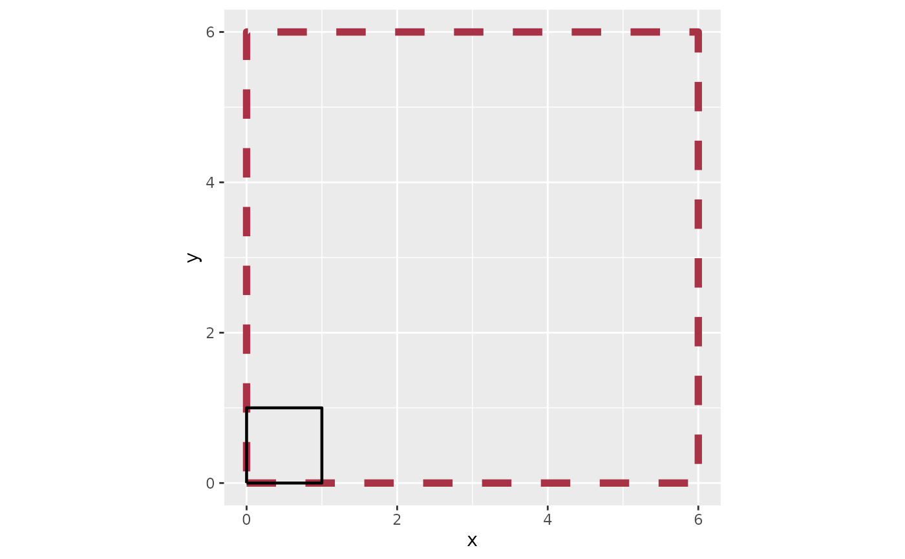
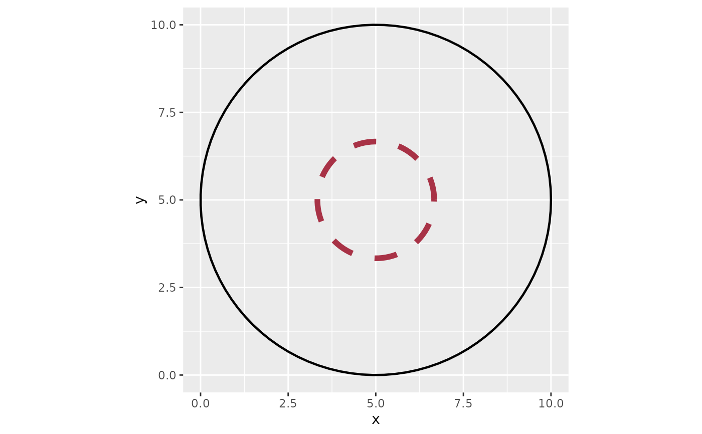

Transforms and Scales Numeric Points in a Data Frame by a Provided Factor and Direction
Source:R/resizer.R
resizer.RdTransforms and Scales Numeric Points in a Data Frame by a Provided Factor and Direction
Usage
resizer(
data = NULL,
x,
y,
x_anchor = NULL,
y_anchor = NULL,
factor = NULL,
direction = "up",
drop = FALSE,
...
)Arguments
- data
A data frame or tibble with at least
xandyvariables.- x
A numeric variable in
data. The variable intended to be plotted on the x axis in aggplot.- y
A numeric variable in
data. The variable intended to be plotted on the y axis in aggplot.- x_anchor
A numeric value. The
xcoordinate point that the resized polygon will be scaled and anchored from. Default is the firstxvalue indata.- y_anchor
A numeric value. The
ycoordinate that the resized polygon will be scaled and anchored from. Default is the firstyvalue indata.- factor
A numeric value. The factor that will be used to resize the existing polygon in
data.- direction
A string value of either
"up"or"down. Data that is scaled"up"(default) will increase in size when plotted. Data that is scaled"down"will decrease in size.- drop
Logical
TRUEorFALSEthat determines if all other variables that are not being resized are removed from the final output. Default isFALSE.- ...
Additional arguments passed to methods. Currently unused but reserved for future extensibility.
Examples
library(ggplot2)
# Resize a simple square "up" by a factor of 6
# Start with data that makes a shape#
df_square <-
data.frame(
x = c(0,1,1,0,0),
y = c(0,0,1,1,0)
)
# Resize the shape#
df_square_resized <-
df_square |>
resizer(x, y, factor = 6)
# Plot them
df_square |>
ggplot(aes(x,y)) +
# resized square - red dashed line
geom_path(data = df_square_resized, color = "#a83246", linewidth = 2, linetype = 2) +
# original square - black solid line
geom_path(color = "#000000", linewidth = .8) +
coord_equal()

# Resize a circle "down" by a factor of 3
df_circle <-
circle_data(x = 5, y = 5, radius = 5, group_var = TRUE)
# Set then anchor point as the middle of the circle c(5,5)
# Although the point 5,5 is in the circle's bounds
# it's not actually a row in `df_circle`
# A message will display in cases like these and is "fine" to ignore.
df_circle_resized <-
df_circle |>
resizer(x,y, x_anchor = 5, y_anchor = 5, direction = "down", factor = 3)
#> ! The anchor point you've supplied (5, 5) is not found in your data.
#> ℹ The data will be scaled relative to this external point
# Plot them
df_circle |>
ggplot(aes(x,y)) +
# resized square - red dashed line
geom_path(data = df_circle_resized, color = "#a83246", linewidth = 2, linetype = 2) +
# original square - black solid line
geom_path(color = "#000000", linewidth = .8) +
coord_equal()
